Paramount+ Streaming Platform
Design system contribution and product design for Top 10, Carousels, and Marquees
Duration of my time contributing to the Paramount+ design system and product
Top 10, Carousels, and Marquees

Overview
Contributed to both the design system and the main streaming experience at Paramount+ for 7 months. I owned key features including Top 10, Carousels, and Marquees while also supporting the design systems team through office hours and building out components and variants.
My Role
Product Designer & Design Systems Contributor
- Owned Top 10, Carousels, and Marquees features
- Contributed to the Paramount+ design system
- Built components and variants for the design system
- Helped facilitate design systems office hours
- Worked on the main streaming experience
Features I Owned
- Top 10 - Showcasing the most popular content on the platform
- Carousels - Content browsing and discovery components
- Marquees - Featured content displays and hero sections
Top 10
The Top 10 feature highlights the most popular shows on Paramount+ each month, helping users discover trending content with an engaging visual presentation.

Marquee
The marquee hero section showcases featured content with immersive imagery, show details, and clear calls-to-action for immediate engagement.

Mobile Experience
Designed responsive components that work seamlessly across mobile devices, including sign-up flows, episode details, content recommendations, and brand browsing.

Carousels
Content carousels like "Now Featuring" and "Originals" help users browse and discover shows with large, visually appealing cards that showcase key information.

Experience gallery
Additional TV, detail-page, and mobile explorations from the Paramount+ streaming experience—hero marquees, Top 10 rows, hubs, and lean-back layouts.
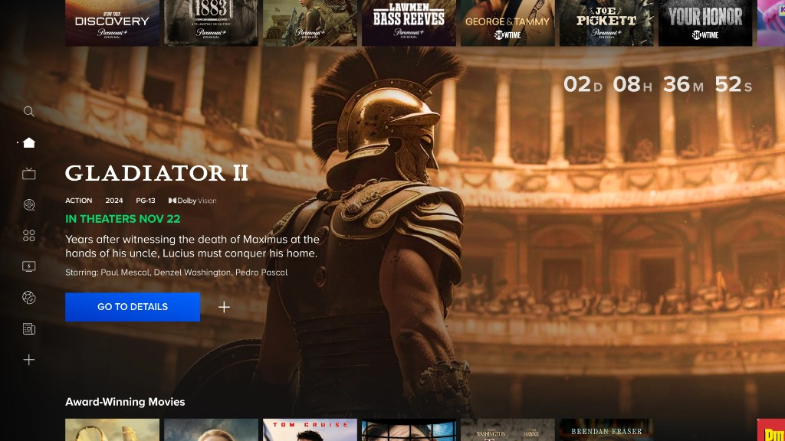
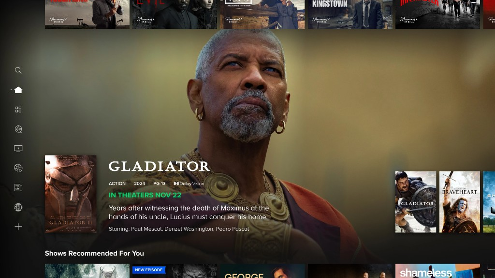
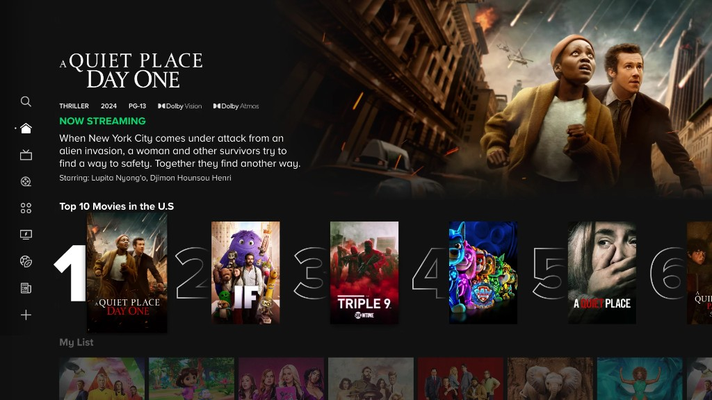
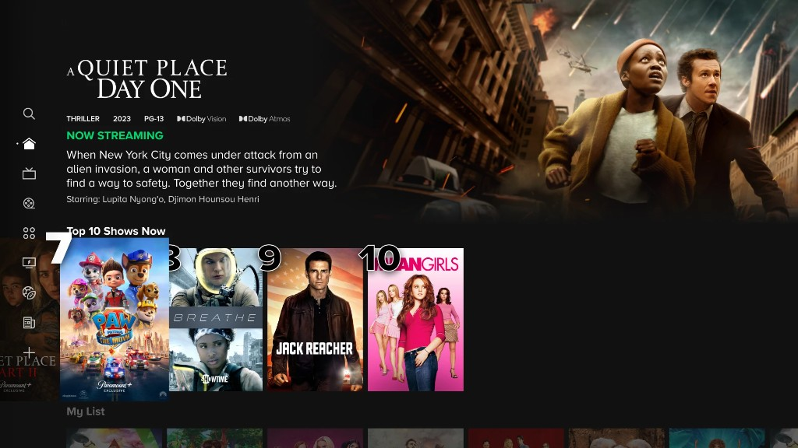
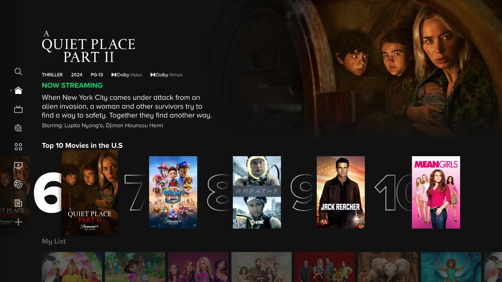
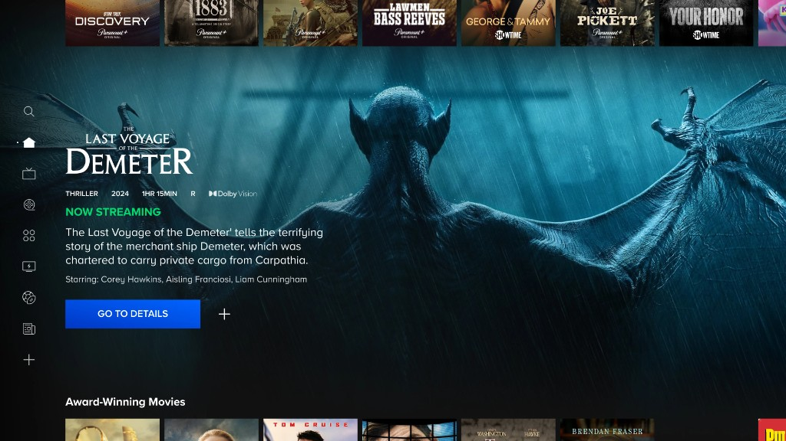
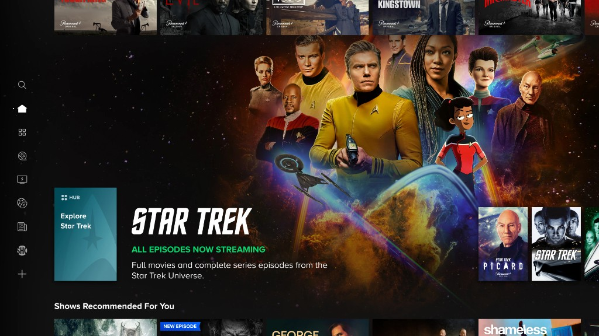
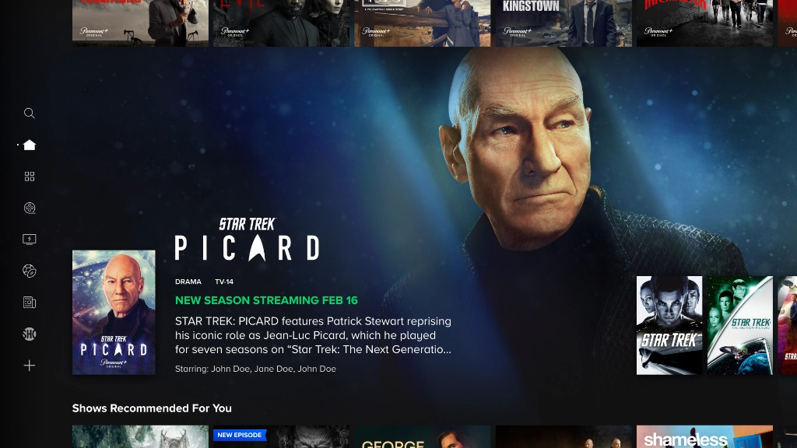
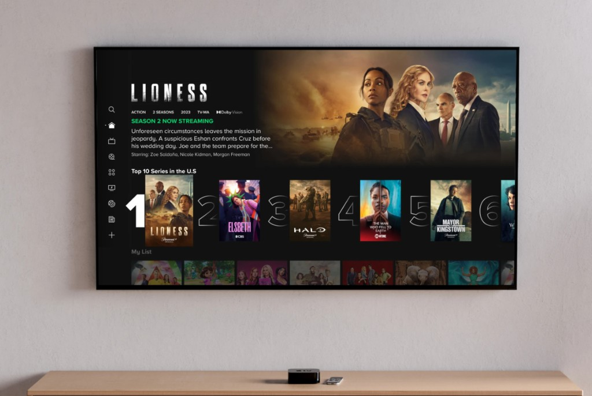
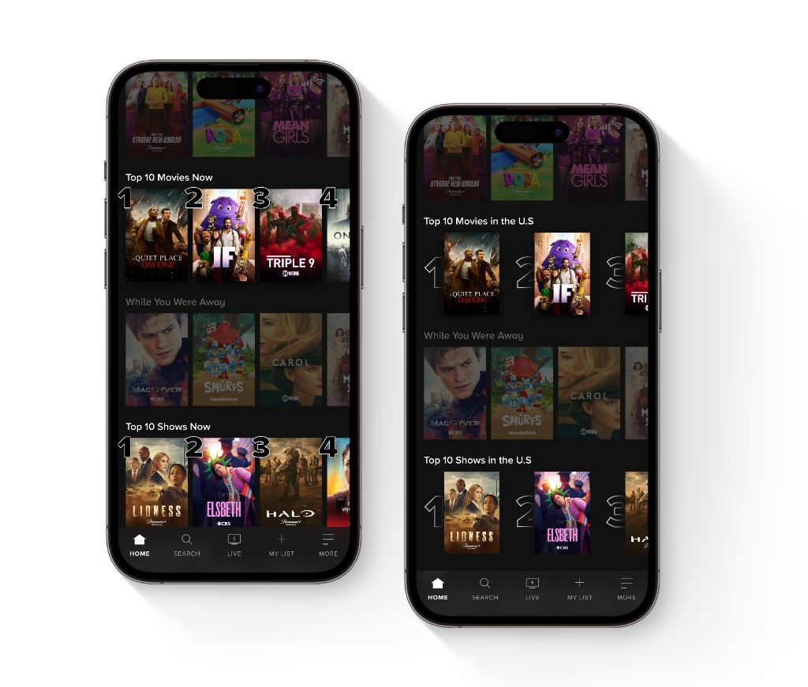
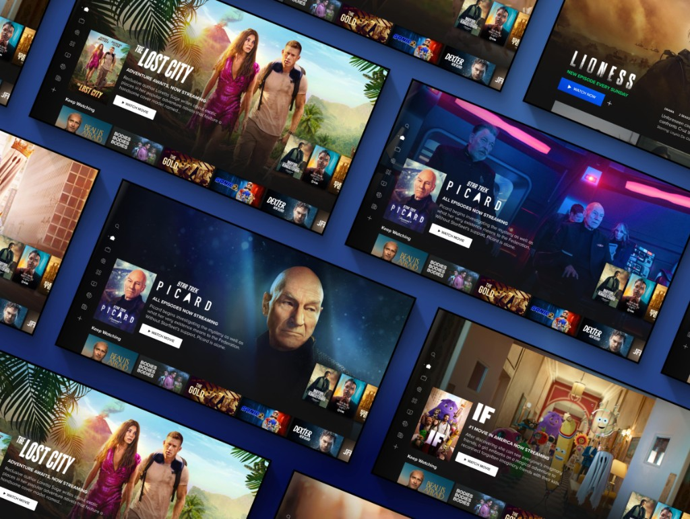
Design Systems Contribution
Beyond product work, I contributed to the design system by:
- Building reusable components and variants
- Helping run design systems office hours for the broader team
- Ensuring consistency across the streaming platform